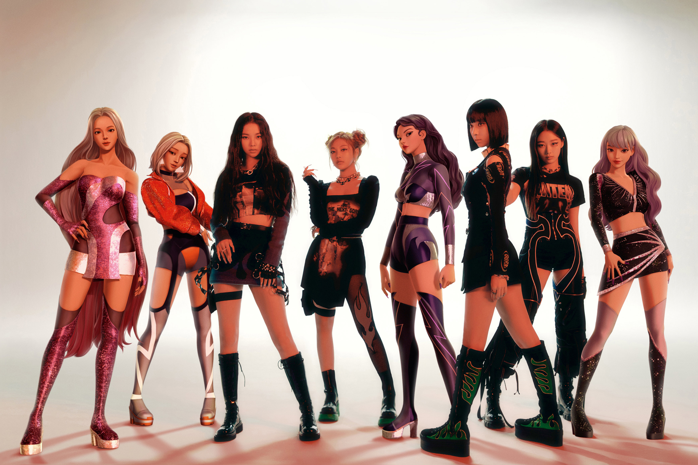

Aespa's Lore and Storyline
When talking about the lore of Aespa, it mainly focuses on the fictional storyline depicted in their songs and music videos. In addition to this, SM Entertainment produced a set of small episodes on YouTube to support the concept and expand the world building.
The four members each have their own avatars, otherwise known as æ-aespa. In order to connect to with their avatars, the Aespa girls use the digital connection called "SYNKholes." They team up with their avatars to fight the main villain of the story, Black Mamba. She is shown as a large cobra in most of the videos but sometimes can be seen in a more human form. Her goal is to terminate the connection between the girls and the avatars, and thinks humanity treats the digital world as disposable.
In addition to this, Aespa has the assistance of Naevis, who is a navigational avatar. She acts as a guide through this digital world called Kwangya, which is the Korean word for "wilderness."
